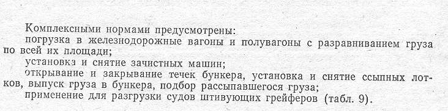

Таблица 9. Штивующие греферы,
применяемые для перегрузки навалочных грузов
Таблица 10. Распределение груза в трюмах судна по слоям,
процент от грузоподъемности судна
Таблица 11. Коэффициенты к комплексным
нормам времени, применяемые при перегрузке навалочных грузов в условиях, отличающихся
от предусмотренных нормами